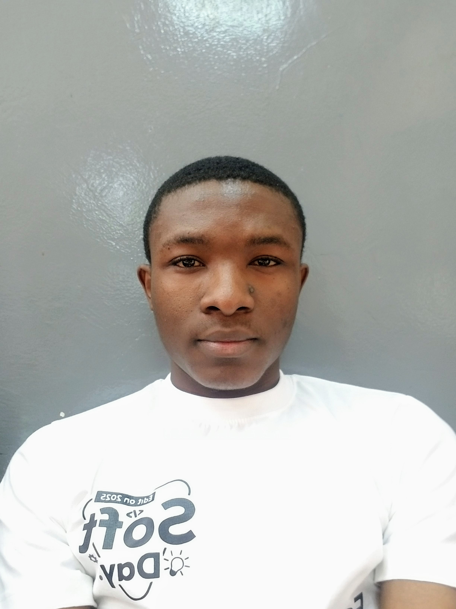

À Propos de moi
Bonjour ! Je m'appelle Bill Mutebi et je suis un étudiant dynamique et motivé en
informatique à l'UDBL. Passionné par le développement web, l'intelligence artificielle, et
le
système embarqué, je suis constamment à la recherche de nouvelles opportunités
d'apprentissage et de défis stimulants.
Au cours de mes études, j'ai développé de solides compétences en programmation. Je suis
une personne rigoureuse, créative et j'aime travailler en équipe pour atteindre des objectfs
communs. Mon objectif est de contribuer à des projets innovants, trouver un stage, et
maitriser le Deep Learning.
| CATEGORIE | COMPETENCES | NIVEAU |
|---|---|---|
| Programmation | HTML, CSS, JavaScript, python | Avancé |
| Design | Figma,Photoshop(bases) | Intermédiaire |
| Langues | Français(natif), Anglais(fluide) | Avancé |
| Outils | Git, VS Code, Suite Office | Avancé |
| Soft Skills | Communication, Résolution de problèmes, Autonomie | Expert |